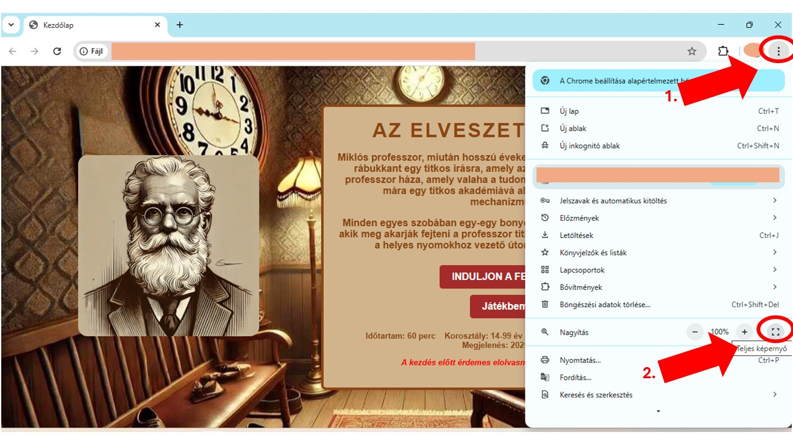
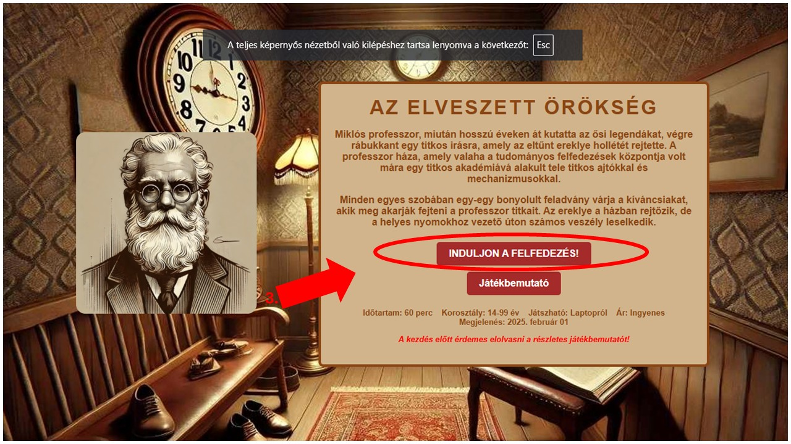
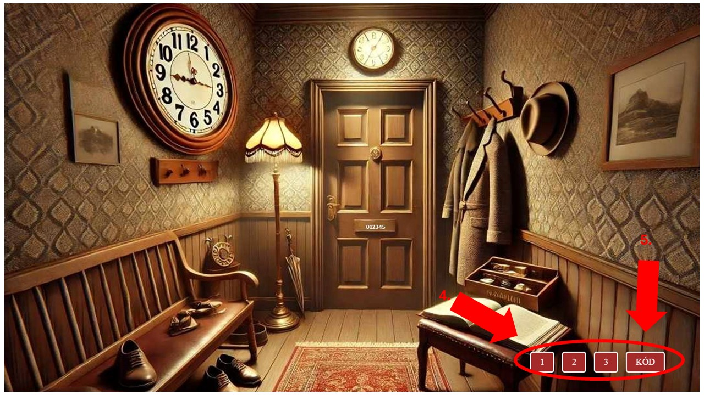
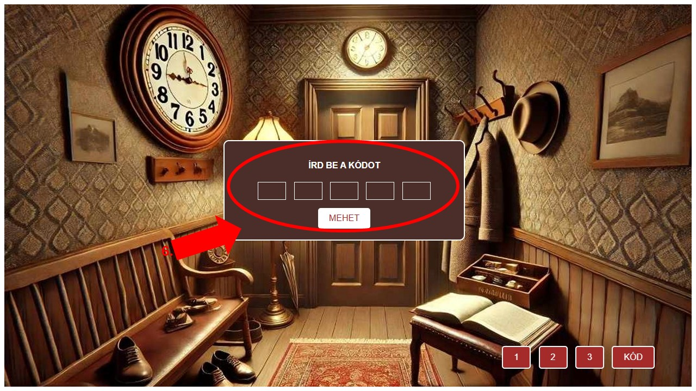

JÁTÉKBEMUTATÓ
I. A jobb felhasználói élmény érdekében, vagy amennyiben
kisebb képernyővel rendelkezel és nem látszik a szoba teljes képe, érdemes a képernyő alján és jobb oldalán lévő
csúszkákat használni, vagy teljes képernyőre tenni a weblapot a képernyő jobb oldalán található
"HÁROM PONT" (1.) majd a "TELJES KÉPERNYŐ" (2.) opciót választani!
Amennyiben kiszeretnél lépni a teljes képernyős módból, akkor használd ehhez a bilentyűzeted bal felső sarkában lévő "ESC, esc" gombot!

II. A játékot az "INDULJON A FELFEDEZÉS" gombbal (3.) tudod elindítani! Fontos tudnod, a játék során ilyen kinézetben lévő szövegek mindig
gombokat rejtenek, bátran kattints rájuk!

III. A szobákban mindig fogsz találni a képernyőd jobb alsó sarkában számokkal történő "FELIRATOKAT"(4.)
Ezek a nyomok, ezekre bátran kattints, hiszen ezek segítenek a kód megfejtésében.
Illetve találsz minden szobában egy "KÓD" feliratot, amelyre kattintva beírhatod az adott
szoba kódját! (5.)

IV. Ha a nyom megfejtéséhez szükséged van segítségre, akkor a felugró ablakban a
"SEGÍTSÉG" feliratra kattintva rögtön meg is kapod az adott nyomhoz tartozó segítséget!

V. Ha rákattintottál a szobában lévő "KÓD" nevezetű gombra,
akkor a helyes kódot beírva, már mehetsz is (6.) a következő szobába!

------------------------------------------------------
FORRÁSOK
A szabadulószobákban lévő képek a
https://www.wikipedia.org/ és https://www.openal.org/
oldalakról származnak.
A szabadulószobában lévő feladványok saját fejlesztésűek!
------------------------------------------------------